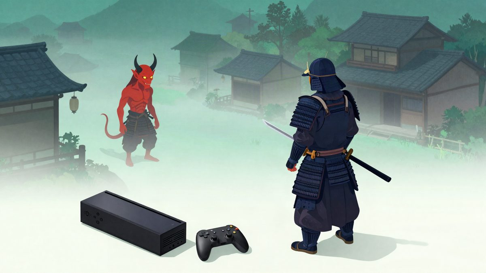
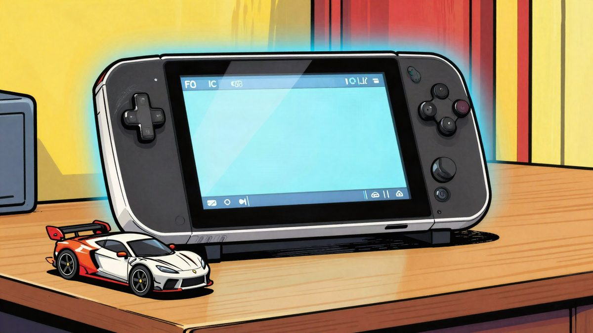

Nioh 3 stiže na Xbox 28. siječnja 2027., uz besplatnu PC verziju preko Play Anywherea

Team Ninja i Koei Tecmo potvrdili su da Nioh 3 Complete Edition izlazi na Xbox i Nintendo Switch 2 28. siječnja 2027. Xbox verzija podržava Play Anywhere, pa uz nju dolazi i besplatna PC verzija. Cijena i dostupnost u Europi još nisu poznate.
Nioh 3 dolazi na Xbox. Developer Team Ninja i izdavač Koei Tecmo potvrdili su da igra izlazi na Xboxu i Nintendo Switchu 2 28. siječnja 2027. Xbox verzija podržava Play Anywhere, pa uz nju dolazi i besplatna PC verzija.
Izlazi Nioh 3 Complete Edition, koja uključuje osnovnu igru i oba DLC proširenja. Ista edicija istodobno izlazi i na PlayStationu 5 te na Steamu, a za Xbox je to prvo izdanje serijala. Najava je objavljena 24. studenog 2026., uz poruku o 10 godina serijala Nioh.
Nioh 3 je mračni action RPG u kojem igrač preuzima ulogu Takechiyoa, a borbe su nadahnute souls-like igrama. Prema opisu u Xbox trgovini, Takechiyo mora putovati kroz vrijeme da promijeni svoju sudbinu i spasi Japan preplavljen yokaijima. Igra ima otvorena prostranstva za istraživanje, a u borbi se može trenutno prebacivati između Samurai i Ninja stila. Usput se susreću likovi iz povijesti, opasni yokaiji, zlokobna sela i Crucible.
Prijašnji PS5 ekskluzivi na Xboxu
Nioh 3 se pridružuje naslovima koji su se s PS5 platforme nedavno pojavili na Xboxu. Među njima su Final Fantasy VII Revelations, Death Stranding, PHYSINT i Helldivers 2, koji je izdao Sony.
Za Nioh 1 i 2 zasad nema najave. Windows Central navodi da bi na PlayStationu mogli imati stroža izdavačka ograničenja nego Nioh 3. Redatelj serijala rekao je još 2022. da za dolazak franšize na Xbox nema velikih izgleda, vjerojatno zbog ograničenja izdavača.
Team Ninja i Xbox ipak već surađuju. Studio je radio na igri Wo Long, nedavno na Ninja Gaiden 4, a remake igre Fatal Frame II ove je godine također izašao na Xboxu. Souls-like igre na Xboxu dobro prolaze, a ove su godine izašle, među ostalima, Valor Mortis i Mortal Shell 2. Nioh se smatra jednim od najboljih souls-inspiriranih serijala izvan studija From Software, uz bok igri Lies of P.
Izvor: Windows Central (Xbox)
Povezani članci

Microsoftov Auto SR je izašao iz preview faze: do 120 fps na ROG Xbox Ally X11. studenoga 2026.- Minecraft za Switch 2 je stigao s boljim svjetlom i sjenama, a vlasnici Switch verzije plaćaju oko 0,60 eura28. listopada 2026.
 Musk: Optimus bi za 12 do 18 mjeseci trebao raditi kućanske poslove, nova demonstracija stiže za mjesec-dva21. studenoga 2026.
Musk: Optimus bi za 12 do 18 mjeseci trebao raditi kućanske poslove, nova demonstracija stiže za mjesec-dva21. studenoga 2026.